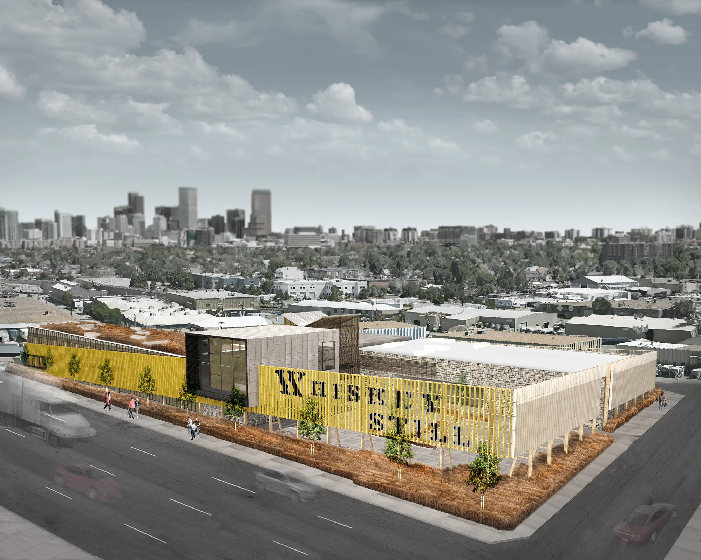
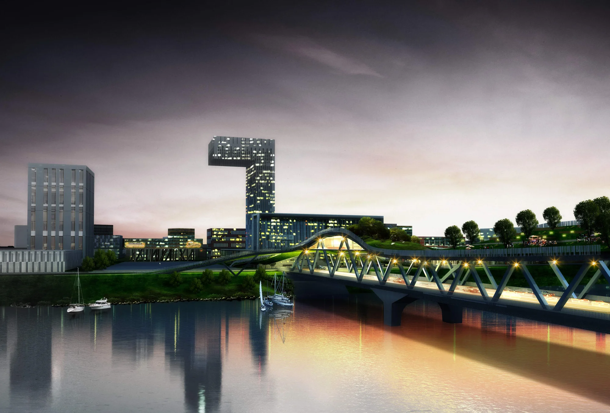
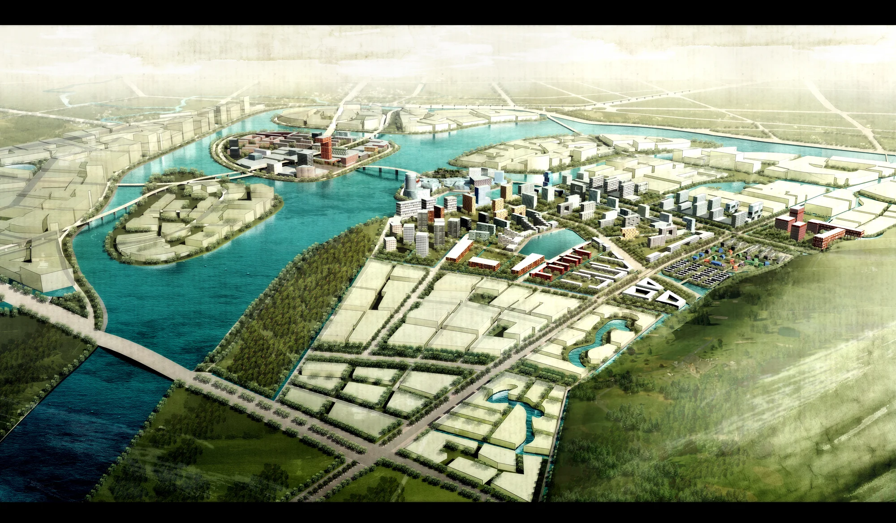
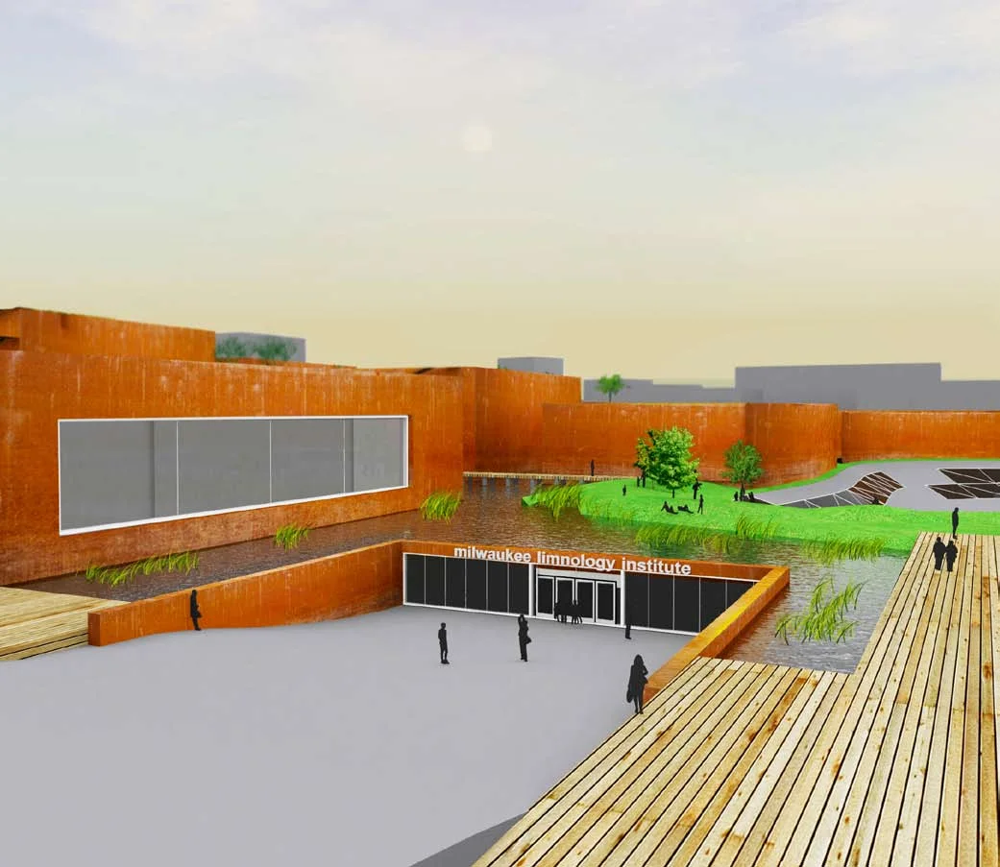
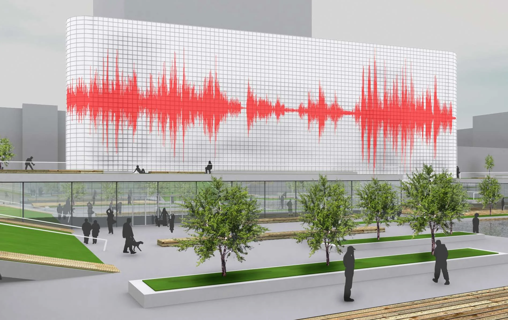
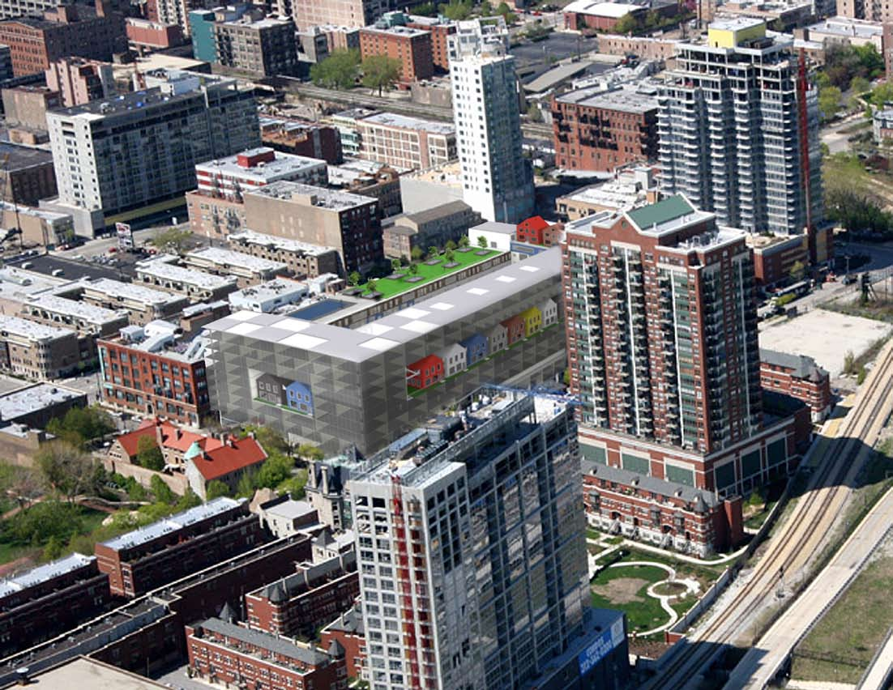

Architecture|Speculative
Urban Whiskey Distillery
An award-winning invited competition proposal exploring craft, fabrication, hospitality, and material expression.

Architecture|Built Work
909 Walnut
An award-winning mixed-use infill building shaped by daylight, public space, and a layered terracotta facade.

Architecture|Speculative
Jeddah Souk Community
A mixed-use souk and residential proposal responding to cultural context and climate.

Architecture|Speculative
Bologna Train Station
An invited international competition proposal reimagining a train station as public, mixed-use infrastructure.

Landscape Architecture|Architecture|Speculative
Chengdu Living Bridge
A second-place competition proposal for an inhabitable ecological bridge and public landscape.

Architecture|Built Work
Chengdu Water City Masterplan
An urban masterplan organized around a cluster of islands and the public realm, currently under construction.

Architecture|Built Work
Restaurant Projects
Brider and Blue Island Oyster Bar, two Denver restaurant interiors carried from rendering through construction.

Architecture|Speculative
Brilliant Balconies
An invited competition proposal converting a vacant office tower into a vertical neighborhood of distinct apartment types.

Landscape Architecture|Architecture|Speculative
Milwaukee Limnology Center
A student proposal making water purification and soil remediation part of the site's architecture and public experience.

Architecture|Speculative
Minnesota Orchestra Redesign
A student redesign connecting Orchestra Hall and Peavey Plaza through public space and a programmable media facade.

Architecture|Speculative
Outside.in
A speculative student housing proposal reworking Chicago's high-rise structural grid into a varied residential community.